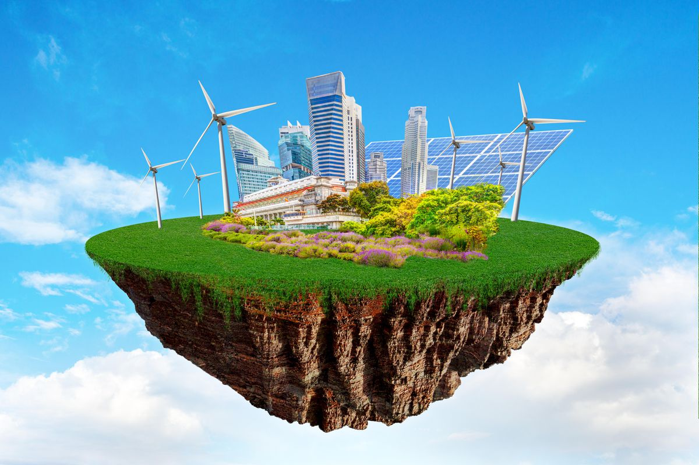
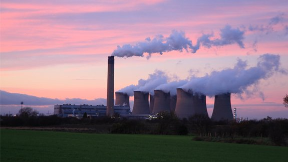

17.5%
Wind Energy
Wind energy describes the process by which wind is used to generate electricity. In this process, wind turbines convert the kinetic energy in the wind into mechanical power. A generator within the mechanism then converts the mechanical power into electricity. Wind turbines are often seen on wind farms, these farms are often located in optimal spots in order to produce maximum energy. Wind energy is a renewable energy source and does not have a negative effect on the environment
Solar Energy

Solar energy is a process where energy from the sun is captured and converted into usable electricity. Solar energy is created by nuclear fusion that takes place in the sun. The energy, heat, and light from the sun flow away in the form of electromagnetic radiation. Solar energy similarly to wind energy is a renewable energy source. Solar panels are the most common mechanism used to harness solar energy. Solar panels are often seen on roofs of homes and buildings and can power various different things.
Renewable Energy

Renewable Energy is the energy we derive from Earth's naturally occuring resources such as heat, wind and water. These sources are referred to as renewable because they are sustainable and inexhaustabible. Renewable energy isn't used nearly as much as non-renewable energy, but its use is increasing
Non-Renewable Energy

Non-Renewable Energy is the energy that comes from non-renewable sources, meaning these sources are in fact exhaustible. Non-renewable sources include fossil fuels such as coal, oil and natural gas. These fossil fuels are the primary sources of Energy across the world and are finite resources that are damaging to the environment. The top cause of carbon emissions in the US comes from electricity generation produced by burning fossil fuels.
Key Statistics
-One out of 10 people still lack electricity, most of which live in rural areas of the developing world - more than half are in Sub-saharan Africa
-Energy is by far the main contributor to climate change. It accounts for 73% of human-caused greenhouse gasses.
-2.8 billion people in the world rely on polluting and unhealthy fuels for cooking
-As of 2017, 17.5% of power was generated through rebewable power sources
-The renewable energy sector employed 11.5 million people in 2019.
-The right energy efficiency policies could enable the world to achieve 40% of the emissions cuts needed to reach its climate goals - without new technology